Ken Levasseur, Al Doerr, Michiel Smid, Oscar Levin, Charles M. Grinstead, J. Laurie Snell, Eric Lehman, F. Thomson Leighton, Albert R Meyer, Jeff Erickson, Kenneth P. Bogart, Carol Chritchlow, David Eck, OpenDSA Project, L.J. Miller
The common thread that connects all of the problems in this section is the desire to optimize (maximize or minimize) a quantity that is associated with a graph. We will concentrate most of our attention on two of these problems, the Traveling Salesman Problem and the Maximum Flow Problem. At the close of this section, we will discuss some other common optimization problems.
Subsection15.5.1Weighted Graphs
Definition15.5.1.Weighted Graph.
A weighted graph, \((V, E, w)\text{,}\) is a graph \((V, E)\) together with a weight function \(w: E \to \mathbb{R}\text{.}\) If \(e \in E\text{,}\)\(w(e)\) is the weight on edge \(e\text{.}\)
As you will see in our examples, \(w(e)\) is often a cost associated with the edge \(e\text{;}\) therefore, most weights will be positive.
Example15.5.2.A Distance Graph.
Let \(V\) be the set of six capital cities in New England: Boston, Augusta, Hartford, Providence, Concord, and Montpelier. Let \(E\) be \(\{\{a, b\} \in V
\times V \mid a\neq b\}\text{;}\) that is, \((V,E)\) is a complete unordered graph. An example of a weight function on this graph is \(w\left(c_1, c _2\right) =
\textrm{the distance, in miles, from } c_1 \textrm{ to } c_2\text{.}\)
Many road maps define distance functions as in the following table.
Table15.5.3.Distances between capital cities in New England
--
Augusta
Boston
Concord
Hartford
Montpelier
Providence
Augusta, ME
--
165
148
266
190
208
Boston, MA
165
--
75
103
192
43
Concord, NH
148
75
--
142
117
109
Hartford, CT
266
103
142
--
204
70
Montpelier, VT
190
192
117
204
--
223
Providence, RI
208
43
109
70
223
--
Subsection15.5.2The Traveling Salesman Problem
The Traveling Salesman Problem is, given a weighted graph, to find a circuit \(\left(e_1,
e_2,\ldots ,e_n\right)\) that visits every vertex at least once and minimizes the sum of the weights, \(\sum_{i=1}^n w\left(e_i\right)\text{.}\) Any such circuit is called an optimal path.
Some statements of the Traveling Salesman Problem require that the circuit be Hamiltonian. In many applications, the graph in question will be complete and this restriction presents no problem. If the weight on each edge is constant, for example, \(w(e)
= 1\text{,}\) then an optimal path would be any Hamiltonian circuit.
Example15.5.4.The problem of a Boston salesman.
The Traveling Salesman Problem gets its name from the situation of a salesman who wants to minimize the number of miles that he travels in visiting his customers. For example, if a salesman from Boston must visit the other capital cities of New England, then the problem is to find a circuit in the weighted graph of Example 15.5.2. Note that distance and cost are clearly related in this case. In addition, tolls and traffic congestion might also be taken into account.
The search for an efficient algorithm that solves the Traveling Salesman has occupied researchers for years. If the graph in question is complete, there are \((n -1)!\) different circuits. As \(n\) gets large, it is impossible to check every possible circuit. The most efficient algorithms for solving the Traveling Salesman Problem take an amount of time that is proportional to \(n 2^n\text{.}\) Since this quantity grows so quickly, we can’t expect to have the time to solve the Traveling Salesman Problem for large values of \(n\text{.}\) Most of the useful algorithms that have been developed have to be heuristic; that is, they find a circuit that should be close to the optimal one. One such algorithm is the “closest neighbor” algorithm, one of the earliest attempts at solving the Traveling Salesman Problem. The general idea behind this algorithm is, starting at any vertex, to visit the closest neighbor to the starting point. At each vertex, the next vertex that is visited is the closest one that has not been reached. This shortsighted approach typifies heuristic algorithms called greedy algorithms, which attempt to solve a minimization (maximization) problem by minimizing (maximizing) the quantity associated with only the first step.
Algorithm15.5.5.The Closest Neighbor Algorithm.
Let \(G = (V, E, w)\) be a complete weighted graph with \(|V| = n\text{.}\) The closest neighbor circuit through G starting at \(v_1\) is \(\left(v_1,
v_2,\ldots ,v_n\right)\text{,}\) defined by the steps:
\(V_1= V-\left\{v_1\right\}\text{.}\)
For \(k\text{ }= 2 \textrm{ to } n - 1\)
\(v_k= \textrm{ the closest vertex in } V_{k-1}
\textrm{ to }
v_{k-1}\text{:}\)
\begin{equation*}
w\left(v_{k-1} , v _k\right) = \min
\left(w\left(v_{k-1} ,v\right) \mid v \in V_{k-1}\right)
\end{equation*}
In case of a tie for closest, \(v_k\) may be chosen arbitrarily.
\(\displaystyle v_n= \textrm{the only element of } V_n\)
The cost of the closest neighbor circuit is \(\sum_{k=1}^{n-1}
w\left(v_k,v_{k+1}\right)+w\left(v_n,v_1\right)\)
Example15.5.6.A small example.
The closest neighbor circuit starting at A in Figure 15.5.7 is \((1,3,2,4,1)\text{,}\) with a cost of 29. The optimal path is \((1,2,3,4,1)\text{,}\) with a cost of 27.
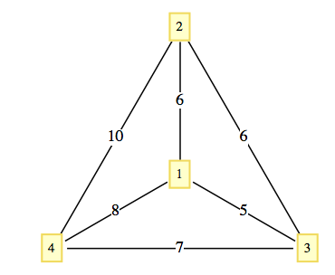
Figure15.5.7.A small example
Although the closest neighbor circuit is often not optimal, we may be satisfied if it is close to optimal. If \(C_{opt}\) and \(C_{cn}\) are the costs of optimal and closest neighbor circuits in a graph, then it is always the case that \(C_{opt}\leq
C_{cn}\) or \(\frac{C_{cn}}{C_{opt}}\geq
1\text{.}\) We can assess how good the closest neighbor algorithm is by determining how small the quantity \(\frac{C_{cn}}{C_{opt}}\) gets. If it is always near 1, then the algorithm is good. However, if there are graphs for which it is large, then the algorithm may be discarded. Note that in Example 15.5.6, \(\frac{C_{cn}}{C_{opt}} = \frac{29}{27}\approx 1.074\text{.}\) A 7 percent increase in cost may or may not be considered significant, depending on the situation.
Example15.5.8.The One-way Street.
A salesman must make stops at vertices A, B, and C, which are all on the same one-way street. The graph in Figure 15.5.9 is weighted by the function \(w(i, j)\) equal to the time it takes to drive from vertex \(i\) to vertex \(j\text{.}\)
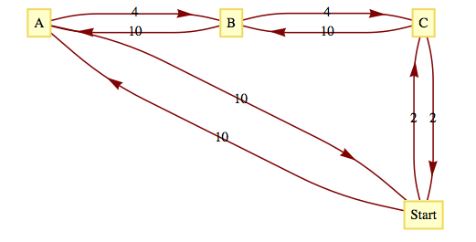
Figure15.5.9.Traveling a one-way street
Note that if \(j\) is down the one-way street from \(i\text{,}\) then \(w(i, j) <
w(j, i)\text{.}\) The values of \(C_{opt}\text{,}\) and \(C_{cn}\) are 20 and 32, respectively. Verify that \(C_{cn}\) is 32 by using the closest neighbor algorithm. The value of \(\frac{C_{cn}}{C_{opt}} = 1.6\) is significant in this case since our salesman would spend 60 percent more time on the road if he used the closest neighbor algorithm.
A more general result relating to the closest neighbor algorithm presumes that the graph in question is complete and that the weight function satisfies the conditions
\(w(x, y) = w(y, x)\) for all \(x\text{,}\)\(y\) in the vertex set, and
\(w(x, y) + w(y, z) \geq w(x, z)\) for all \(x\text{,}\)\(y\text{,}\)\(z\) in the vertex set.
The first condition is called the symmetry condition and the second is the triangle inequality.
Theorem15.5.10.
If \((V, E, w)\) is a complete weighted graph that satisfies the symmetry and triangle inequality conditions, then
If \(|V|=8\text{,}\) then this theorem says that \(C_{cn}\) can be no larger than twice the size of \(C_{opt}\text{;}\) however, it doesn’t say that the closest neighbor circuit will necessarily be that far from an optimal circuit. The quantity \(\frac{\left\lceil
\log _2 (2n)\right\rceil
}{2}\) is called an upper bound for the ratio \(\frac{C_{cn}}{C_{opt}}\text{.}\) It tells us only that things can’t be any worse than the upper bound. Certainly, there are many graphs with eight vertices such that the optimal and closest neighbor circuits are the same. What is left unstated in this theorem is whether there are graphs for which the quantities are equal. If there are such graphs, we say that the upper bound is sharp.
The value of \(\frac{C_{cn}}{C_{opt}}\) in Example Example 15.5.8 is 1.6, which is greater than \(\frac{\lceil \log _2 (2\cdot 4)\rceil}{2} = 1.5\text{;}\) however, the weight function in this example does not satisfy the conditions of the theorem.
Example15.5.12.The Unit Square Problem.
Suppose a robot is programmed to weld joints on square metal plates. Each plate must be welded at prescribed points on the square. To minimize the time it takes to complete the job, the total distance that a robot’s arm moves should be minimized. Let \(d(P, Q)\) be the distance between \(P\) and \(Q\text{.}\) Assume that before each plate can be welded, the arm must be positioned at a certain point \(P_0\) . Given a list of \(n\) points, we want to put them in order so that
The type of problem that is outlined in the example above is of such importance that it is one of the most studied version of the Traveling Salesman Problem. What follows is the usual statement of the problem. Let \([0, 1] = \{x \in \mathbb{R} \mid \text{ }0
\leq x\leq 1\}\text{,}\) and let \(S = [0,1]^2\text{,}\) the unit square. Given \(n\) pairs of real numbers \(\left(x_1, y_1\right),\left(x_2,y_2\right), \dots , \left(x_n,y_n\right)\) in \(S\) that represent the \(n\) vertices of a \(K_n\text{,}\) find a circuit of the graph that minimizes the sum of the distances traveled in traversing the circuit.
Since the problem calls for a circuit, it doesn’t matter which vertex we start at; assume that we will start at \(\left(x_1,y_1\right)\text{.}\) Once the problem is solved, we can always change our starting position. A function can most efficiently describe a circuit in this problem. Every bijection \(f: \{1, . . . , n\} \to \{1, . . . , n\}\) with \(f(1)
= 1\) describes a circuit
There are \((n - 1)!\) such bijections. Since a circuit and its reversal have the same associated cost, there are \(\frac{(n - 1)!}{2}\) cases to consider. An examination of all possible cases is not feasible for large values of \(n\text{.}\)
One popular heuristic algorithm is the strip algorithm:
Heuristic15.5.13.The Strip Algorithm.
Given \(n\) points in the unit square:
Phase 1:
Divide the square into \(\left\lceil \sqrt{n/2}\right\rceil\) vertical strips, as in Figure 15.5.14. Let d be the width of each strip. If a point lies on a boundary between two strips, consider it part of the left-hand strip.
Starting from the left, find the first strip that contains one of the points. Locate the starting point by selecting the first point that is encountered in that strip as you travel from bottom to top. We will assume that the first point is \(\left(x_1,y_1\right)\)
Alternate traveling up and down the strips that contain vertices until all of the vertices have been reached.
Return to the starting point.
Phase 2:
Shift all strips \(d/2\) units to the right (creating a small strip on the left).
Repeat Steps 1.2 through 1.4 of Phase 1 with the new strips.
When the two phases are complete, choose the shorter of the two circuits obtained.
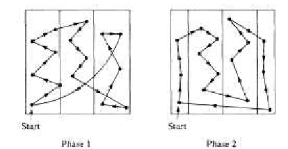
Figure15.5.14.The Strip Algorithm
Step Item 3 may need a bit more explanation. How do you travel up or down a strip? In most cases, the vertices in a strip will be vertically distributed so that the order in which they are visited is obvious. In some cases, however, the order might not be clear, as in the third strip in Phase I of Figure 15.5.14. Within a strip, the order in which you visit the points (if you are going up the strip) is determined thusly: \(\left(x_i,y_i\right)\) precedes \(\left(x_j,y_j\right)\) if \(y_i <y_j\) or if \(y_i=y_j\) and \(x_i < x_j\) . In traveling down a strip, replace \(y_i < y_j\) with \(y_i >y_j\text{.}\)
The selection of \(\left\lceil \sqrt{n/2}\right\rceil\) strips was made in a 1959 paper by Beardwood, Halton, and Hammersley. It balances the problems that arise if the number of strips is too small or too large. If the square is divided into too few strips, some strips may be packed with vertices so that visiting them would require excessive horizontal motion. If too many strips are used, excessive vertical motion tends to be the result. An update on what is known about this algorithm is contained in [42].
Since the construction of a circuit in the square consists of sorting the given points, it should come as no surprise that the strip algorithm requires a time that is roughly a multiple of \(n \log n\) time units when \(n\) points are to be visited.
The worst case that has been encountered with this algorithm is one in which the circuit obtained has a total distance of approximately \(\sqrt{2n}\) (see Sopowit et al.).
Subsection15.5.3Networks and the Maximum Flow Problem
Definition15.5.15.Network.
A network is a simple weighted directed graph that contains two distinguished vertices called the source and the sink with the properties that the indegree of the source and outdegree of the sink are both zero, and source is connected to sink. The weight function on a network is the capacity function, which has positive weights.
An example of a real situation that can be represented by a network is a city’s water system. A reservoir would be the source, while a distribution point in the city to all of the users would be the sink. The system of pumps and pipes that carries the water from source to sink makes up the remaining network. We can assume that the water that passes through a pipe in one minute is controlled by a pump and the maximum rate is determined by the size of the pipe and the strength of the pump. This maximum rate of flow through a pipe is called its capacity and is the information that the weight function of a network contains.
Example15.5.16.A City Water System.
Consider the system that is illustrated in Figure 15.5.17. The numbers that appear next to each pipe indicate the capacity of that pipe in thousands of gallons per minute. This map can be drawn in the form of a network, as in Figure 15.5.18.
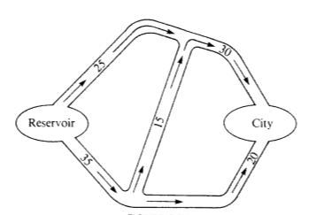
Figure15.5.17.City Water System
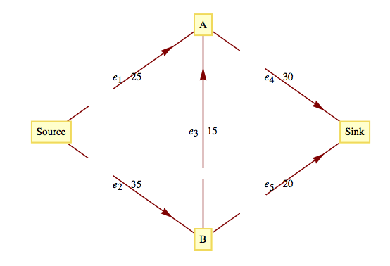
Figure15.5.18.Flow Diagram for a City’s Water Network
Although the material passing through this network is water, networks can also represent the flow of other materials, such as automobiles, electricity, bits, telephone calls, or patients in a health system.
Problem15.5.19.The Maximum Flow Problem.
The Maximum Flow Problem is derived from the objective of moving the maximum amount of water or other material from the source to the sink. To measure this amount, we define a flow as a function \(f: E \to \mathbb{R}\) such that (1) the flow of material through any edge is nonnegative and no larger than its capacity: \(0 \leq f(e) \leq w(e)\text{,}\) for all \(e\in E\text{;}\) and (2) for each vertex other than the source and sink, the total amount of material that is directed into a vertex is equal to the total amount that is directed out:
\begin{align}
\begin{array}{ccc}
\sum_{(x,v)\in E} f(x,v) & = & \sum_{(v,y)\in E} f(v,y) \\
\textrm{Flow into } v & = & \textrm{ Flow out of } v \\
\end{array}\tag{15.5.1}
\end{align}
The summation on the left of (15.5.1) represents the sum of the flows through each edge in \(E\) that has \(v\) as a terminal vertex. The right-hand side indicates that you should add all of the flows through edges that initiate at \(v\text{.}\)
Theorem15.5.20.Flow out of Source equals Flow in Sink.
If \(f\) is a flow, then \(\quad \quad\)\(\sum_{(\text{source},v)\in E}
f(\text{source},v)\text{ }=\sum_{(v,\text{sink})\in E} f(v,\text{sink})\)
Proof.
Subtract the right-hand side of (15.5.1) from the left-hand side. The result is:
\begin{equation*}
\text{Flow into } v - \text{ Flow out of } v = 0
\end{equation*}
Now sum up these differences for each vertex in \(V' = V - \{\text{source},
\text{sink}\}\text{.}\) The result is
Now observe that if an edge connects two vertices in \(V'\text{,}\) its flow appears as both a positive and a negative term in (15.5.2). This means that the only positive terms that are not cancelled out are the flows into the sink. In addition, the only negative terms that remain are the flows out of the source. Therefore,
The two values flow into the sink and flow out of the source were proved to be equal in Theorem 15.5.20 and this common value is called the value of the flow. It is denoted by \(V(f)\text{.}\) The value of a flow represents the amount of material that passes through the network with that flow.
Since the Maximum Flow Problem consists of maximizing the amount of material that passes through a given network, it is equivalent to finding a flow with the largest possible value. Any such flow is called a maximal flow.
For the network in Figure 15.5.18, one flow is \(f_1\text{,}\) defined by \(f_1\left(e_1\right)=25\text{,}\)\(f_1\left(e_2\right)=20\text{,}\)\(f_1\left(e_3\right)=0\text{,}\)\(f_1\left(e_4\right)= 25\text{,}\) and \(f_1\left(e_5\right)=20\text{.}\) The value of \(f_1\text{,}\)\(V\left(f_1\right)\text{,}\) is 45. Since the total flow into the sink can be no larger than 50 (\(w \left(e_4\right) + w \left(e_5\right) = 30 + 20\)), we can tell that \(f_1\) is not very far from the solution. Can you improve on \(f_1\) at all? The sum of the capacities into the sink can’t always be obtained by a flow. The same is true for the sum of the capacities out of the source. In this case, the sum of the capacities out of the source is 60, which obviously can’t be reached in this network.
A solution of the Maximum Flow Problem for this network is the maximal flow \(f_2\text{,}\) where \(f_2\left(e_1\right)=25\text{,}\)\(f_2\left(e_2\right)=25\text{,}\)\(f_2\left(e_3\right)=5\text{,}\)\(f_2\left(e_4\right)= 30\text{,}\) and \(f_2\left(e_5\right)=20\text{,}\) with \(V\left(f_2\right) = 50\text{.}\) This solution is not unique. In fact, there is an infinite number of maximal flows for this problem.
There have been several algorithms developed to solve the Maximal Flow Problem. One of these is the Ford and Fulkerson Algorithm (FFA). The FFA consists of repeatedly finding paths in a network called flow augmenting paths until no improvement can be made in the flow that has been obtained.
Definition15.5.22.Flow Augmenting Path.
Given a flow \(f\) in a network \((V, E)\text{,}\) a flow augmenting path with respect to \(f\) is a simple path from the source to the sink using edges both in their forward and their reverse directions such that for each edge \(e\) in the path, \(w(e) - f(e) > 0\) if \(e\) is used in its forward direction and \(f(e) > 0\) if \(e\) is used in the reverse direction.
Example15.5.23.Augmenting City Water Flow.
For \(f_1\) in Figure 15.5.18, a flow augmenting path would be\(\left(e_2 , e_3 , e_4 \right)\) since \(w\left(e_2\right)-f_1\left(e_2\right)=
15\text{,}\)\(w\left(e_3\right)-f_1\left(e_3\right)=5\text{,}\) and \(w\left(e_4\right)-f_1\left(e_4\right)=5\text{.}\)
These positive differences represent unused capacities, and the smallest value represents the amount of flow that can be added to each edge in the path. Note that by adding 5 to each edge in our path, we obtain \(f_2\text{,}\) which is maximal. If an edge with a positive flow is used in its reverse direction, it is contributing a movement of material that is counterproductive to the objective of maximizing flow. This is why the algorithm directs us to decrease the flow through that edge.
Algorithm15.5.24.The Ford and Fulkerson Algorithm.
Define the flow function \(f_0\) by \(f_0(e)=0\) for each edge \(e
\in E\text{.}\)
i = 0.
Repeat:
If possible, find a flow augmenting path with respect to \(f_i\text{.}\)
If a flow augmenting path exists, then:
Determine
\begin{equation*}
\begin{split}
d & = \min \{\{w(e) - f_i(e) \mid e
\text{ is used in the forward
direction}\},\\
& \quad \quad \quad \{f_i(e) \mid e
\text{ is used in the reverse
direction}\}\}\\
\\
\end{split}
\end{equation*}
Define \(f_{i+1}\) by
\begin{equation*}
\begin{array}{cc}
f_{i+1}(e) = f_i(e) & \text{if } e
\text{ is not part of the flow augmenting
path} \\
f_{i+1}(e)=f_i(e)+d & \text{if } e
\text{ is used in the forward direction} \\
f_{i+1}(e)=f_i(e)-d & \text{if } e
\text{ is used in the reverse direction} \\
\end{array}
\end{equation*}
\(\displaystyle i = i + 1\)
until no flow augmenting path exists.
Terminate with a maximal flow \(f_i\)
List15.5.25.Notes on the Ford and Fulkerson Algorithm
It should be clear that every flow augmenting path leads to a flow of increased value and that none of the capacities of the network can be violated.
The depth-first search should be used to find flow augmenting paths since it is far more efficient than the breadth-first search in this situation. The depth-first search differs from the breadth-first algorithm in that you sequentially visit vertices until you reach a “dead end” and then backtrack.
There have been networks discovered for which the FFA does not terminate in a finite number of steps. These examples all have irrational capacities. It has been proven that if all capacities are positive integers, the FFA terminates in a finite number of steps. See Ford and Fulkerson, Even, or Berge for details.
When you use the FFA to solve the Maximum Flow Problem by hand it is convenient to label each edge of the network with the fraction \(\frac{f_i(e)}{w(e)}\text{.}\)
Algorithm15.5.26.Depth-First Search for a Flow Augmenting Path.
This is a depth-first search for the Sink Initiating at the Source. Let \(E'\) be the set of directed edges that can be used in producing a flow augmenting path. Add to the network a vertex called start and the edge \((\text{start},
\text{source}).\)
\(S = \)vertex set of the network.
\(p = \)source \(\quad \quad\) Move \(p\) along the edge \((start,
source)\)
while \(p\) is not equal to start or sink:
if an edge in \(E'\) exists that takes you from \(p\) to another vertex in \(S\text{:}\)
\begin{equation*}
\quad \text{then set
} p \text{ to be that next vertex and delete the edge
from } E'
\end{equation*}
\begin{equation*}
\quad \text{else reassign }p \text{ to
be the vertex that }p\text{ was reached from (i.e.,
backtrack)}\text{.}
\end{equation*}
\(\text{if } p = \text{start:}\)
\begin{equation*}
\text{ then no flow augmenting path exists.}
\end{equation*}
\begin{equation*}
\text{ else }p = \text{sink and you have found a flow augmenting
path.}
\end{equation*}
Example15.5.27.A flow augmenting path going against the flow.
Consider the network in Figure 15.5.28, where the current flow, \(f\text{,}\) is indicated by a labeling of the edges.
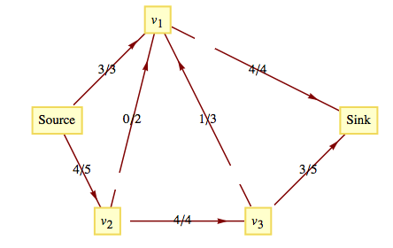
Figure15.5.28.Current Flow
The path \(\left(Source, v_2 , v_1,v_3 , Sink\right)\) is a flow augmenting path that allows us to increase the flow by one unit. Note that \(\left(v_1,v_3\right)\) is used in the reverse direction, which is allowed because \(f\left(v_1,v_3\right)>0\text{.}\) The value of the new flow that we obtain is 8. This flow must be maximal since the capacities out of the source add up to 8. This maximal flow is defined by Figure 15.5.29.
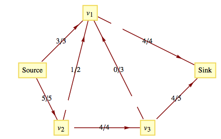
Figure15.5.29.Updated Flow
Subsection15.5.4Other Graph Optimization Problems
The Minimum Spanning Tree Problem: Given a weighted graph, \((V, E, w)\text{,}\) find a subset \(E'\) of \(E\) with the properties that \((V, E')\) is connected and the sum of the weights of edges in \(E'\) is as small as possible. We will discuss this problem in Chapter 10.
The Minimum Matching Problem: Given an undirected weighted graph, \((K, E,
w)\text{,}\) with an even number of vertices, pair up the vertices so that each pair is connected by an edge and the sum of these edges is as small as possible. A unit square version of this problem has been studied extensively. See [42] for details on what is known about this version of the problem.
The Graph Center Problem: Given a connected, undirected, weighted graph, find a vertex (called a center) in the graph with the property that the distance from the center to every other vertex is as small as possible. “As small as possible” is normally interpreted as minimizing the maximum distance from the center to a vertex.
Exercises15.5.5Exercises
1.
Find the closest neighbor circuit through the six capitals of New England starting at Boston. If you start at a different city, will you get a different circuit?
Answer.
The circuit would be Boston, Providence, Hartford, Concord, Montpelier, Augusta, Boston. It does matter where you start. If you start in Concord, for example, your mileage will be higher.
2.
Is the estimate in Theorem 15.5.10 sharp for \(n = 3\text{?}\) For \(n = 4\text{?}\)
3.
Given the following sets of points in the unit square, find the shortest circuit that visits all the points and find the circuit that is obtained with the strip algorithm.
Phase I Path: \((A,C,B,C,E)\quad \quad \text{Distance }=
2.57\)
Phase II Path: \((A,B,D,E,C) \quad \quad\textrm{Distance
}=2.31\)
4.
For \(n = 4, 5, \text{and } 6\text{,}\) locate \(n\) points in the unit square for which the strip algorithm works poorly.
5.
Consider the network whose maximum capacities are shown on the following graph.
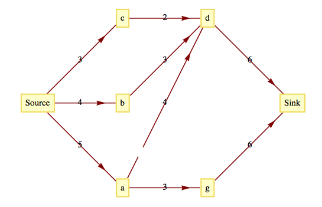
Figure15.5.30.
A function \(f\) is partially defined on the edges of this network by: \(f(\text{Source}, c) =2\text{,}\)\(f(\text{Source}, b) =2\) , \(f(\text{Source}, a) = 2\text{,}\) and \(f(a, d) = 1\text{.}\) Define \(f\) on the rest of the other edges so that \(f\) is a flow. What is the value of \(f\) ?
Find a flow augmenting path with respect to \(f\) for this network. What is the value of the augmented flow?
Is the augmented flow a maximum flow? Explain.
Answer.
\(f(c,d)=2\text{,}\)\(f(b,d)=2\text{,}\)\(f(d,k)=5\text{,}\)\(f(a,g)=1\text{,}\) and \(f(g,k)=1\text{.}\)
There are three possible flow-augmenting paths. \(s,b,d,k\) with flow increase of 1. \(s,a,d,k\) with flow increase of 1, and \(s,a,g,k\) with flow increase of 2.
The new flow is never maximal, since another flow-augmenting path will always exist. For example, if \(s,b,d,k\) is used above, the new flow can be augmented by 2 units with \(s,a,g,k\text{.}\)
6.
Given the following network with capacity function \(c\) and flow function \(f\text{,}\) find a maximal flow function. The labels on the edges of the network are of the form \(f(e)/c(e)\text{,}\) where \(c(e)\) is the capacity of edge \(e\) and \(f(e)\) is the used capacity for flow \(f\text{.}\)
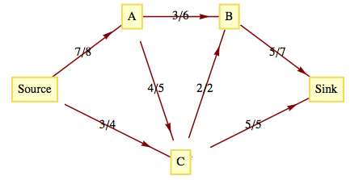
Figure15.5.31.
7.
Find maximal flows for the following networks.
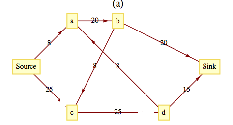Figure15.5.32.
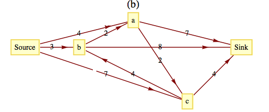Figure15.5.33.
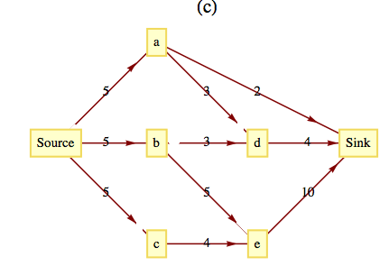
Figure15.5.34.
Answer.
Value of maximal flow \(=31\text{.}\)
Value of maximal flow \(=14\text{.}\)
Value of maximal flow \(=14\text{.}\) See Table 15.5.35 for one way to got this flow.
Table15.5.35.
Step
Flow-augmenting path
Flow added
1
\(\text{Source},A,\text{Sink}\)
2
2
\(\text{Source}, C,B, \text{Sink}\)
3
3
\(\text{Source},E,D, \text{Sink}\)
4
4
\(\text{Source},A,B,\text{Sink}\)
1
5
\(\text{Source},C,D, \text{Sink}\)
2
6
\(\text{Source},A,B,C,D, \text{Sink}\)
2
8.
Find two maximal flows for the network in Figure 15.5.28 other than the one found in the text.
Describe the set of all maximal flows for the same network.
Prove that if a network has two maximal flows, then it has an infinite number of maximal flows.
9.
Discuss reasons that the closest neighbor algorithm is not used in the unit square version of the Traveling Salesman Problem.
Hint.
Count the number of comparisons of distances that must be done.
Answer.
To locate the closest neighbor among the list of \(k\) other points on the unit square requires a time proportional to \(k\text{.}\) Therefore the time required for the closest-neighbor algorithm with \(n\) points is proportional to \((n-1)+(n-2)+\cdots +2+1\text{,}\) which is proportional to \(n^2\text{.}\) Since the strip algorithm takes a time proportional to \(n(\log n)\text{,}\) it is much faster for large values of \(n\text{.}\)
10.
Explore the possibility of solving the Traveling Salesman Problem in the “unit box”: \([0,1]^3\text{.}\)
11.
Devise a “closest neighbor” algorithm for matching points in the unit square.